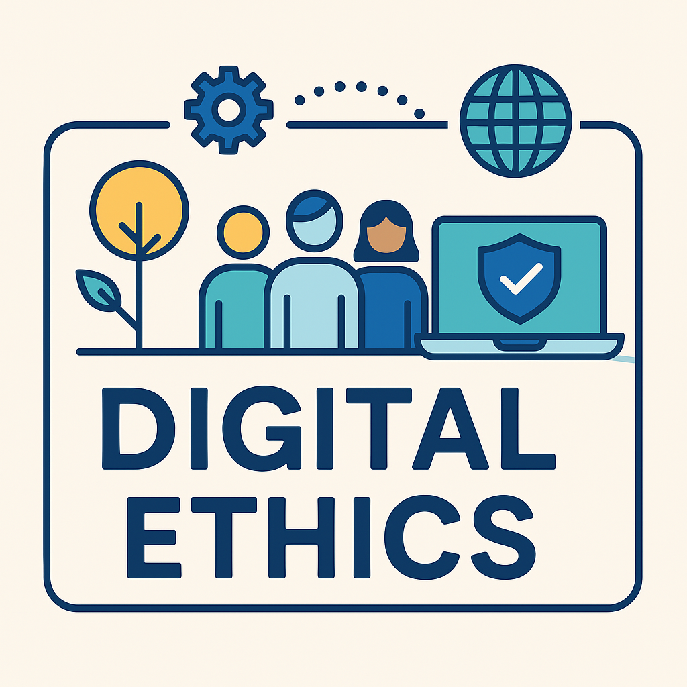

Digital ethics refers to the principles and moral values governing responsible behavior when using technology. In an increasingly connected world, it’s essential to understand how our actions in the digital space affect others and society.
Privacy: Respect user data and personal boundaries.
Security: Protect data from breaches and misuse.
Transparency: Clearly communicate how tech is used and how decisions are made.
Inclusivity: Ensure access and accessibility for all users.
Accountability: Take responsibility for the outcomes of digital systems.
AI’s role in decision-making (bias, fairness, transparency)
Balancing surveillance with civil liberties
Combatting the digital divide and promoting access
| Issue | Concern Level |
|---|---|
| Data Privacy | 85% |
| Cybersecurity | 70% |
| AI Bias | 65% |
W3C Ethical Web Principles
Stanford: Computer & Information Ethics
Brookings Institution: Digital Ethics
By understanding digital ethics, we help shape a digital future that values fairness, responsibility, and respect for all individuals.